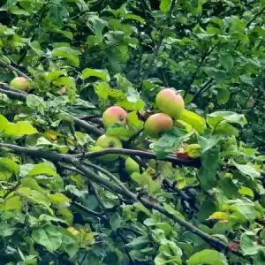
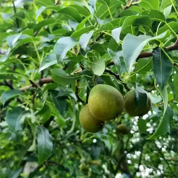
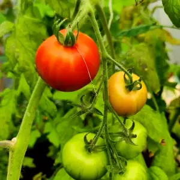
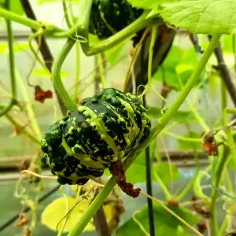

Min hobby
Tillsammans med min familj odlar jag många olika frukter, bär och grönsaker i vår trädgråd. Vi har olika frukträd och bärbuskar. Vi har trädgårdsland och även ett stort växthus.




I vår trädgård:
| Fruktträd | Bärbuskar | Trädgårdsland | Växthus |
|---|---|---|---|
| Äppelträd | Svartvinbärsburskar | Morötter | Tomater |
| Päronträd | Rödvinbärsbuskar | Potatis | Gurkor |
| Plommonträd | Gröna krusbärsbuskar | Purjolök | Pumpor |
| Körsbärsträd | Röda krusbärsbuskar | Jordgubbar | Vindruvor |
Odlingszoner
Sverige är indelat i åtta odlingszoner. Odlingszonen talar om vilka växter som klarar vintern där man bor. Sundsvall ligger i zon 3.
Riksförbundet Svensk Trädgårds karta för odlingszoner av träd och buskar: Zonkartan